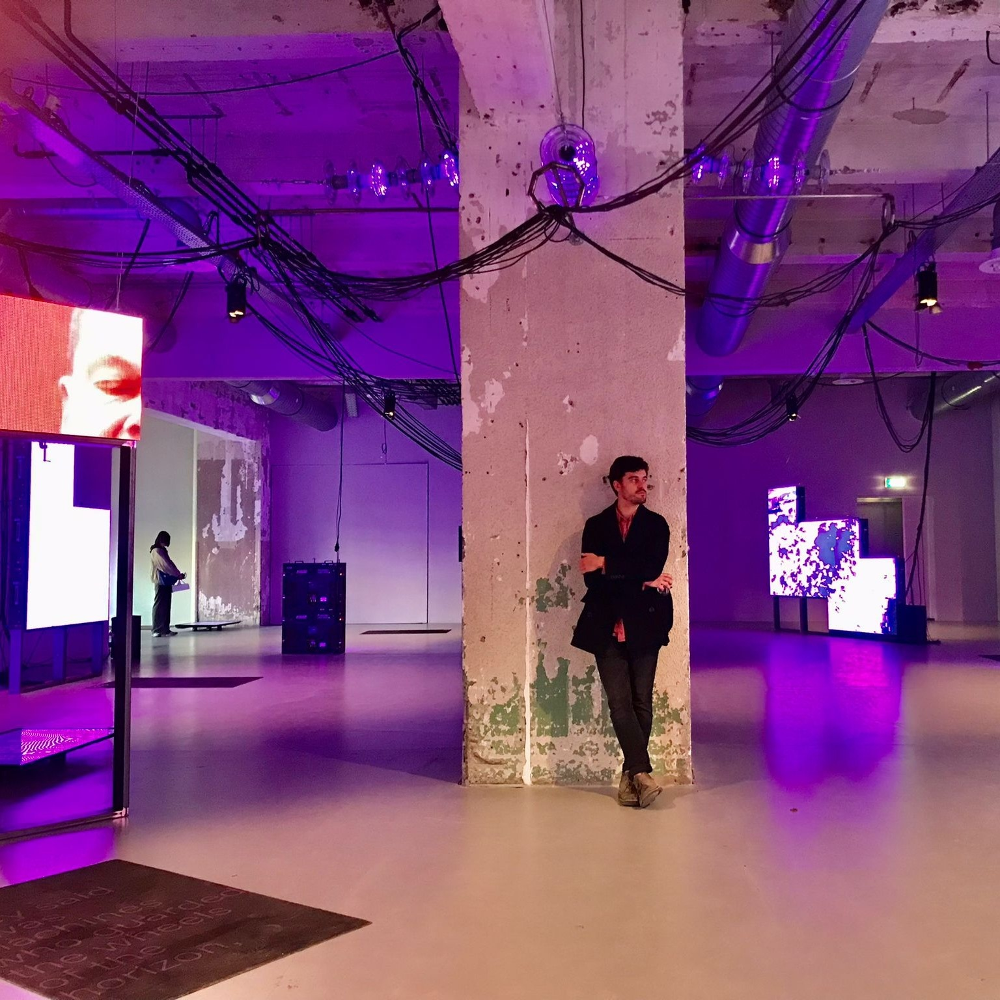

Valentin Vogelmann
Education
International Studies of Computational Linguistics, Tuebingen
Master of Logic, UvA
Work Experience & Projects
- TravisFoundation
- INDElab
- SABIO
- Promethean Promise: Concert in AI
- LAWKI
- co-supervised (with Jelle Zuidema) 4 students of B.Sc. Artificial Intelligence at UvA;
1 of whom was awarded the Amsterdam Data Science thesis award
Publications
Refs
- ADS award page: https://amsterdamdatascience.nl/events/thesis-awards/
-
